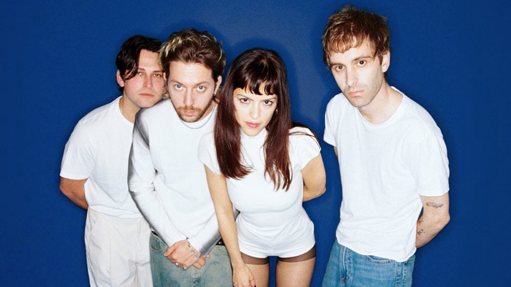

The Marias
Years Active: 2016–present
Genre/s: Alternative pop, indie pop
Label/s: Atlantic
Members: María Zardoya, Josh Conway, Jesse Perlman, Edward James
The Marías is an American alternative pop band from Los Angeles. They are known for performing songs in both English and Spanish in addition to infusing their music with elements including jazz percussion, guitar riffs, and horn solos. Their core lineup consists of lead vocalist María Zardoya, drummer/producer Josh Conway, guitarist Jesse Perlman, and keyboardist Edward James. The band has released two EPs and two studio albums, including Submarine (2024). They received their first solo Grammy nomination for Best New Artist for the 68th Annual Grammy Awards in 2026.
The band is named after its lead singer María Zardoya, who was born in Puerto Rico and grew up in Atlanta, Georgia. She and her then partner Josh Conway, the drummer/producer, met at a show at the Kibitz Room, a bar and music venue inside Canter's Deli in Los Angeles. She was performing on the bill and he was managing the sound, something he had never done before. They began writing almost immediately after meeting, and then began dating. Soon they recruited close friends to join as band members: Edward James on keyboards, and guitarist Jesse Perlman.
They were offered an opportunity to create songs for television, which helped them understand the visual and sonic feel they wanted. When the plans did not materialize, they made an EP, entitled Superclean Vol. I. from the recordings. Vol. I was released in 2017 and its counterpart Vol. II came out in 2018.
In 2018, they collaborated with Triathlon on the song "Drip", released as a single. In 2020–2021, the Marías signed to Atlantic Records. In September 2021, their single "Hush" topped the Billboard Adult Alternative Airplay chart, becoming their first chart-topping single. In 2022, the band went on tour in promotion of Cinema and opened for Halsey on her Love and Power Tour.
In 2022, they collaborated with Bad Bunny on the song "Otro Atardecer" from his album Un Verano Sin Ti. In 2023, they collaborated with Cuco on the song "Si Me Voy", which was released as a single, and also with Tainy and Young Miko on the song "Mañana" from Tainy's album Data.
Later in 2023, they collaborated with Eyedress on the songs "Separate Ways" and "A Room Up in the Sky". In February 2024, the Marías released a trailer for their second album Submarine. In March 2024, they released their first single from the album called "Run Your Mouth", as well as announcing that Submarine would release on May 31, 2024. In April 2024, they released the second single from Submarine, "Lejos de Ti" and later unveiling their tracklist for Submarine. On May 3, 2024, they released two singles simultaneously: "No One Noticed" and "If Only". On April 4, 2025, they released the non-album single "Back to Me".
The song "No One Noticed" from the album Submarine was a viral hit on social media, reaching number 22 on the Billboard Hot 100.
Zardoya also performed with Bad Bunny at several stadium concerts in front of up to 80,000 people. Her solo project Not for Radio, with the EP Melt, was reviewed by magazines such as Interview Magazine and HERO in October 2025. Zardoya described her style as "gothic fairy".
At the 68th Annual Grammy Awards, they received their first Grammy nomination for Best New Artist.